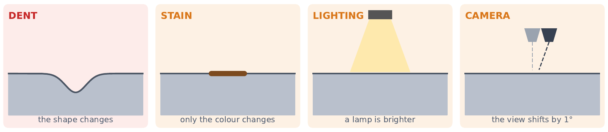

One dark spot, four possible causes

In a single photo, all four can look almost the same. Our method uses the CAD model and a few calibrated photos to tell them apart, or abstains when the photos are not enough.


Ours vs. baselines
| Method | AUROC | Visible dents found | …in the right place | False alarms | Found at equal 5% false alarms |
|---|---|---|---|---|---|
| Ours | 0.82 | 54% | 54% | 10% | 51% |
| MLP deformation field* | 0.74 | 16% | 11% | 6% | 8% |
| 2D detector (U-Net, lifted to 3D) | 0.72 | 24% | 16% | 4% | 16% |
| Free-form deformation field* | 0.63 | 14% | 11% | 4% | 19% |
Ours achieves the best separation and localisation: at the same false-alarm rate it finds more than twice as many dents as any baseline. Its own threshold allows 10% false alarms; textbook statistical tests would allow 32–96%.
*Our re-implementations of the CADSplat idea (CAD-prior deformation field). Each method's own threshold is set on healthy and stained blades.
Which kind of damage is it?
Four specialists (dent, nick, crack, stain) each try to explain the photos. The judge picks the one that fits clearly best, or says “type uncertain” when two fit about equally well.
Each bar: what the judge said for each true type. Nick and crack: 32 realistic cases each (round 2, improved specialists). Dent, stain, healthy: 24 cases each. “Stain/nothing” on real damage means the detector did not report it (a miss, not a typing error). Round 1 recognised only 2/32 nicks.
Why depth is the hard part
A real example on an industrial blade: the dent was found in the right place, but measured 10× too shallow. In two ordinary photos, a small, sharp 0.06 mm dent and a 0.6 mm dent can produce nearly identical pixels.
Our experiments show depth is not reliably identifiable from two photos: on new designs found dents are measured at a median 60% of their true depth. Better search, more starting points and four cameras instead of two did not fix it, and depth ranges contained the true value only 36 of 109 times.
So: where the damage is, is reliable; how deep needs more information, most likely low-angle (grazing) lighting. This is the next experiment.
We know where the damage is on the blade: on the sealed Rotor37 test, located dents are found a median 0.7 mm (mean 0.8 mm) from their true centre, on blades about 74 mm long.
Other test sets: unseen industrial designs mean 0.6 mm; realistic nicks and cracks mean 1.9 mm (long cracks make “centre” less precise).
All results are on computer-rendered blades (public aero-engine compressor blades, NASA Rotor 37, and six industrial aero-engine blade designs). Validation on real 3D-printed, damaged and scanned blades is the next step.